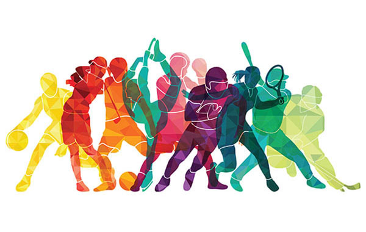
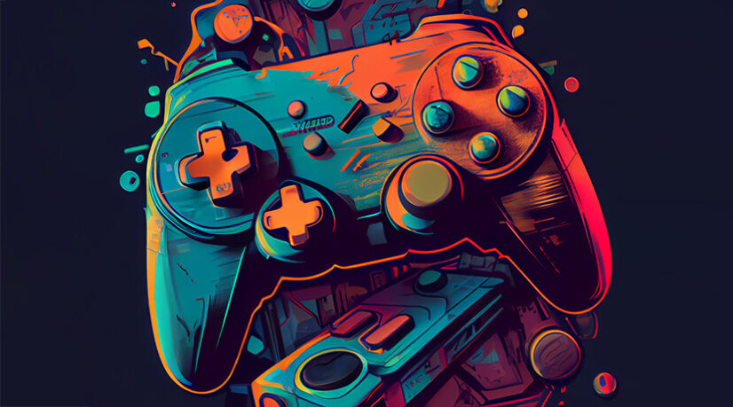

Sport occupies a central place in my life, testifying to my passion for physical activity and surpassing myself. During six years dedicated to swimming, I developed not only good physical condition, but also a competitive spirit and the perseverance necessary to achieve my goals. My commitment was not limited to swimming, as I devoted two years to judo, where I won a gold medal, an experience that strengthened my self-confidence and discipline. In parallel, I explored badminton for four years as a member of the UNSS, fostering teamwork and sportsmanship.

My hobbies
Translate to FrenchSports

Music
Music is a passion that has become an integral part of my daily life over the years. Whether I'm on public transport, walking to IUT or working, music helps me to concentrate and relax. Even if I like all the different styles of music, I have a preference for French rap, more specifically trap and drill, because these styles have a high flow but also a particular sound that I like a lot.
Video games

Video games are a passion that has had a profound influence on my life. Since my childhood, I've immersed myself enthusiastically in this interactive universe, exploring varied virtual worlds and discovering captivating stories. Whether through immersive adventure games, thrilling online competitions or rich narrative experiences, video games have always been a source of entertainment and escape for me. More than just a hobby, this passion has helped me develop my creativity and strategic thinking, and forge social links with other passionate gamers.